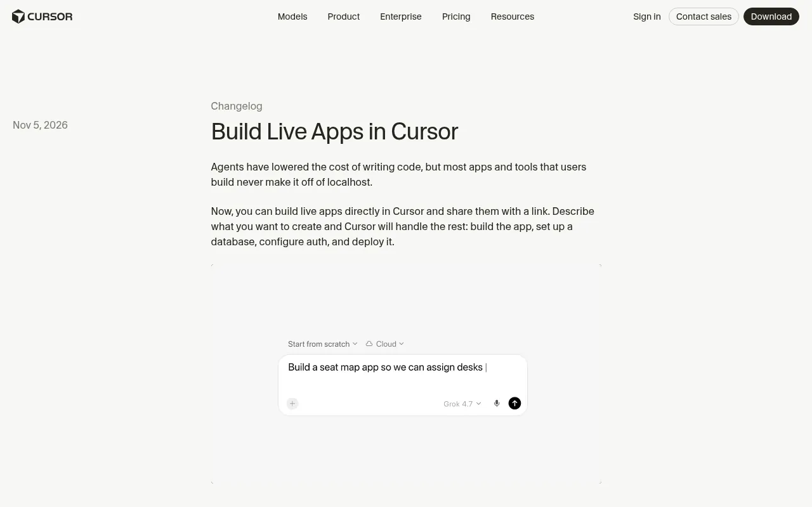
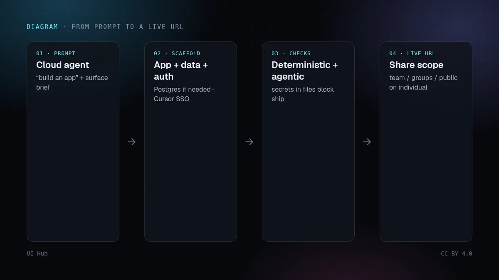
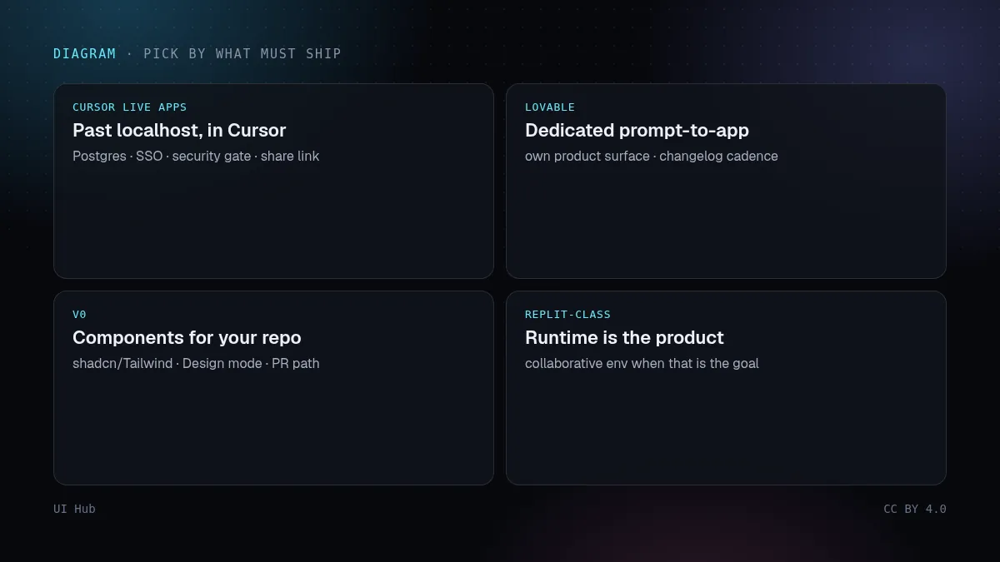

2026 年 11 月 5 日，Cursor 的更新日志上线了 Build Live Apps：对云端智能体说你要做一个应用，它会搭好 Web 应用脚手架，需要时拉起 Postgres，把登录放在 Cursor SSO 后面，配好托管，你选好域名后拿到可分享的链接。官方说法很直白——智能体让写代码变便宜了，但多数应用还是死在 localhost。次日（11 月 6 日）Cursor 还上了 Voice Chat with Agents（Grok Voice），可以边跑任务边语音沟通；适合当设计循环的伴奏，不是这篇的主线。

The New Stack（Paul Sawers，11 月 6 日）把这次发布放在 Lovable、Replit 的「提示生成应用」赛道旁边，并提到 Vercel 在 X 上的公开回复：托管路径建在 Vercel for Platforms 上——团队成员不必各自开 Vercel 账号、也不必手写部署配置。功能面向已开启云端智能体的付费方案。产品是这样；底下的设计问题更老：只能在一台笔记本上跑的演示，还不是产品。

Cursor 自己举的例子偏内部：运营工具、客户多媒体演示、入职培训、销售看板、工程服务门户。这是信号：Live Apps 最强的场景是「挂在团队 SSO 后面分享」，而不是要做有长久设计史的对外品牌站。
设计问题已经从「生成一屏」变成「什么能活过 localhost」。只有你能打开的漂亮预览，不过是灯光更好的本机演示。Live Apps 把脚手架 → 托管 → 登录 → 分享压成一条发布路径；有用，但也意味着你不先决定，审美和安全都会被默认值替你决定。
在智能体搭脚手架之前锁死 Token 和组件。从没见过你的 Button、圆角、字号阶梯的云端智能体，一接到 Postgres 就会发明第二种界面方言。把简短的设计文件（Token、一个强调色、密度、禁止清单）放进智能体会读的仓库，和对待任何编程智能体一样。在点发布之前决定登录与分享范围：SSO 仅限团队，和个人方案上的公开链接，是两种产品。把安全检查当关卡，不当氛围——The New Stack 提醒读者：Semafor 曾报道 Replit 员工在一批 Lovable 应用样本里发现敏感信息暴露，此后 Lovable 称增加了发布前检查。Cursor 的检查对准的是这类问题；它不能代替你审应用到底能碰到什么。
也要知道相邻工具何时更合适。v0 仍是组件导向路径：提示生成可拉进现有仓库的 shadcn/Tailwind，并有 Design mode 与设计系统挂钩——交付物是已有代码里的界面时看 v0 文档。Lovable 仍是独立的提示生成应用产品，更新日志节奏自己的——例如 11 月 6 日为应用内 AI 功能接入 GPT Image 模型、11 月 4 日的「Dreaming」记忆整理，说明它还在当完整产品构建器迭代，而不是 IDE 的附属功能。整机协作运行时才是产品时，Replit 一类环境仍更合适。团队已经住在 Cursor、应用天生该「挂在我们的 SSO 后面、明天就能分享」时，Live Apps 才对。
# Live Apps 发布简报（先贴进云端智能体）
界面： 工位与活动报名用的内部运营工具
受众： 整个团队，Cursor SSO 之后（不公开）
技术栈： 复用我们的 Button/Card；Token 在 styles/tokens.css
数据： 只读座位图来自数仓；任何写入密钥先问我
登录： 仅 Cursor SSO；不要匿名链接
禁止： 写死 API key、第二个强调色、emoji 图标
关卡： 安全检查失败就停；我审过再点 Publish
伴奏： 迭代讨论可用 Voice Chat；发布必须是我点的那一下
交付物必须合进成熟设计系统、且唯一上线路径是 PR 审查时，跳过——v0 或手写 PR 更合适。你需要 Lovable（或 Replit）的完整产品界面、又不以 Cursor 为标准时，跳过。要做智能体从未见过品牌美术方向的对外营销站时，跳过。真正痛的时候再用：一个本来有用的内部界面，若不去掉 localhost，会在站会和演示之间死在某台笔记本上。
UI Hub 相关阅读：Lovable 与 Bolt、v0 到 shadcn、提示生成界面工具对比，以及在运行中的预览上迭代的标注，而不是描述。